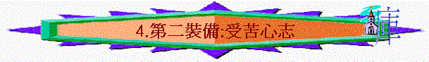

「基督既在肉身受苦，你們也當將這樣的心志作為兵器，因為在肉身受過苦的，就已經與罪繼絕了。」彼前4:1
一.受苦心志的裝備
1.預了受苦：心志即心思、意向，人預了有受苦的意向
2.常作準備：人帶著兵器，常作準備爭戰，同樣，我們也常作準備要受苦
3.必須携帶：兵器是不離手的，人必須在爭戰中携帶的，不能放棄的，我們也要常有受苦的心志，面對大爭戰
二.信徒受苦的原因
1.為福音受苦難
「你要和我同受苦難，好像基督耶穌的精兵。」提後2:3
「我為這福音受苦難，甚至被捆綁，像犯人一樣。然而神的道卻不被捆綁。」提後2:9
∼保羅為福音而受捆綁，信徒也可能為傳主道而受攻擊
2.為行善受苦難
「你們若因犯罪受責打，能忍耐，有什麼可誇的呢？但你們若因行善受苦，能忍耐，這在神看是可喜愛的。」彼前2:20
3.為信仰受苦楚
「你們要追念往日，蒙了光照以後所忍受大爭戰的各樣苦難：」來10:32
「若為作基督徒受苦，卻不要羞恥，倒要因這名歸榮耀給神。」彼前4:16
∼昔日人因信主，而遭猶太人的逼迫
4.為神的旨意受苦難
「你們必須忍耐，使你們行完了神的旨意，就可以得著所應許的。」來10:36
「所以那照神旨意受苦的人要一心為善，將自己靈魂交與那信實的造化之主。」彼前4:19
5.不是為行惡而受苦
「你們中間卻不可有人因為殺人、偷竊、作惡、好管閒事而受苦。」彼前4:15
三.所受苦楚的類別
1.被毁謗
「一面被毀謗，遭患難，成了戲景，叫眾人觀看；一面陪伴那些受這樣苦難的人。」來10:33
「他們在這些事上，見你們不與他們同奔那放蕩無度的路，就以為怪，毀謗你們。」彼前4:4
2.被看為怪
3.受威嚇
「你們就是為義受苦，也是有福的。不要怕人的威嚇，也不要驚慌；（的威嚇：或作所怕的）」彼前3:14
4.被捆鎖
「因為你們體恤了那些被捆鎖的人，並且你們的家業被人搶去，也甘心忍受，知道自己有更美長存的家業。」來10:34
5.被奪家業
6.被殺害
「有可信的話說：我們若與基督同死，也必與他同活；」提後2:11
四.在苦難中的樣式
1.效法基督
「你們蒙召原是為此；因基督也為你們受過苦，給你們留下榜樣，叫你們跟隨他的腳蹤行。他並沒有犯罪，口裡也沒有詭詐。他被罵不還口；受害不說威嚇的話，只將自己交託那按公義審判人的主。
他被掛在木頭上，親身擔當了我們的罪，使我們既然在罪上死，就得以在義上活。因他受的鞭傷，你們便得了醫治。」彼前2:21-24
「因基督也曾一次為罪受苦（有古卷：受死），就是義的代替不義的，為要引我們到神面前。按著肉體說，他被治死；按著靈性說，他復活了。」彼前3:18
「基督既在肉身受苦，你們也當將這樣的心志作為兵器，因為在肉身受過苦的，就已經與罪斷絕了。」彼前4:1
「仰望為我們信心創始成終的耶穌（或作：仰望那將真道創始成終的耶穌）。他因那擺在前面的喜樂，就輕看羞辱，忍受了十字架的苦難，便坐在神寶座的右邊。那忍受罪人這樣頂撞的，你們要思想，免得疲倦灰心。」來12:2-3
2.恆久忍耐
「倘若人為叫良心對得住神，就忍受冤屈的苦楚，這是可喜愛的。你們若因犯罪受責打，能忍耐，有什麼可誇的呢？但你們若因行善受苦，能忍耐，這在神看是可喜愛的。」彼前2:19-20
「你們必須忍耐，使你們行完了神的旨意，就可以得著所應許的。」來10:36
3.不以為恥
「若為作基督徒受苦，卻不要羞恥，倒要因這名歸榮耀給神。」彼前4:16
「你不要以給我們的主作見證為恥，也不要以我這為主被囚的為恥；總要按神的能力，與我為福音同受苦難。」提後1:8
4.不用懼怕
「你們就是為義受苦，也是有福的。不要怕人的威嚇，也不要驚慌；（的威嚇：或作所怕的）」彼前3:14
5.不以為怪
「親愛的弟兄啊，有火煉的試驗臨到你們，不要以為奇怪（似乎是遭遇非常的事）」彼前4:12
6.倒要歡喜
「倒要歡喜；因為你們是與基督一同受苦，使你們在他榮耀顯現的時候，也可以歡喜快樂。」彼前4:13
7.繼續行善
「你們若是熱心行善，有誰害你們呢？你們就是為義受苦，也是有福的。不要怕人的威嚇，也不要驚慌；（的威嚇：或作所怕的）」彼前3:13-14
8.交托父神
「所以那照神旨意受苦的人要一心為善，將自己靈魂交與那信實的造化之主。」彼前4:19
五存受苦心志的果效
1.與罪斷絕
「基督既在肉身受苦，你們也當將這樣的心志作為兵器，因為在肉身受過苦的，就已經與罪斷絕了。」彼前4:1
∼為何存受苦的心志，可以與罪斷絕？
A.不受世人情慾的影响
「你們存這樣的心，從今以後就可以不從人的情慾，只從神的旨意在世度餘下的光陰。因為往日隨從外邦人的心意行邪淫、惡慾、醉酒、荒宴、群飲，並可惡拜偶像的事，時候已經夠了。他們在這些事上，見你們不與他們同奔那放蕩無度的路，就以為怪，毀謗你們。」彼前4:2-4
∼人若立志行善，會同整個世界的人不同，人的情慾是放縱行惡，人見信徒不行惡，就以為他們怪，甚至逼迫他們，他們若有受苦的心志，可以不受其他人的影响
B.更堅定跟從神的旨意
「你們存這樣的心，從今以後就可以不從人的情慾，只從神的旨意在世度餘下的光陰。」彼前4:2
2.得神悅納
「你們若因犯罪受責打，能忍耐，有什麼可誇的呢？但你們若因行善受苦，能忍耐，這在神看是可喜愛的。」彼前2:20
3.得神賜福
「不以惡報惡，以辱罵還辱罵，倒要祝福；因你們是為此蒙召，好叫你們承受福氣。因為經上說：人若愛生命，願享美福，須要禁止舌頭不出惡言，嘴唇不說詭詐的話；」彼前3:9-10
「你們若為基督的名受辱罵，便是有福的；因為神榮耀的靈常住在你們身上。」彼前4:14
「所以，你們不可丟棄勇敢的心；存這樣的心必得大賞賜。」來10:35
4.令人羞愧
「存著無虧的良心，叫你們在何事上被毀謗，就在何事上可以叫那誣賴你們在基督裡有好品行的人自覺羞愧。」彼前3:16
六.忍受苦楚的應用
1.面對乖僻的主人
「你們作僕人的，凡事要存敬畏的心順服主人；不但順服那善良溫和的，就是那乖僻的也要順服。倘若人為叫良心對得住神，就忍受冤屈的苦楚，這是可喜愛的。你們若因犯罪受責打，能忍耐，有什麼可誇的呢？但你們若因行善受苦，能忍耐，這在神看是可喜愛的。」彼前2:18-20
∼當面對乖僻的主人時，信徒應有以下心態：
A.敬畏主的心
B.忍受苦楚
2.面對不從真理的丈夫
「你們作妻子的要順服自己的丈夫；這樣，若有不信從道理的丈夫，他們雖然不聽道，也可以因妻子的品行被感化過來；這正是因看見你們有貞潔的品行和敬畏的心。你們不要以外面的辮頭髮，戴金飾，穿美衣為妝飾，只要以裡面長存久溫柔，安靜的心為妝飾；這在神面前是極寶貴的。」彼前3:1-4
∼當面對不順從真理的丈夫
A.順服
B.存長久溫柔安靜的心
3.面對軟弱的妻子
「你們作丈夫的，也要按情理﹝原文作知識﹞和妻子同住；因他比你軟弱，（比你軟弱：原文作是軟弱的器皿）與你一同承受生命之恩的，所以要敬重他。這樣，便叫你們的禱告沒有阻礙。」彼前3:7
∼當面對軟弱的妻子時
A.要按情理(要體恤她比你軟弱)
B.要不離棄(與她同住)
C.要敬重她
4.面對無理的人
「你們就是為義受苦，也是有福的。不要怕人的威嚇，也不要驚慌；（的威嚇：或作所怕的）只要心裡尊主基督為聖。有人問你們心中盼望的緣由，就要常作準備，以溫柔、敬畏的心回答各人；存著無虧的良心，叫你們在何事上被毀謗，就在何事上可以叫那誣賴你們在基督裡有好品行的人自覺羞愧。」彼前3:14-16
A.敬畏的心
B.溫柔的心
C.無虧的良心